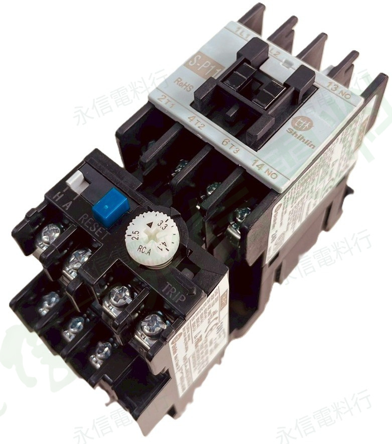
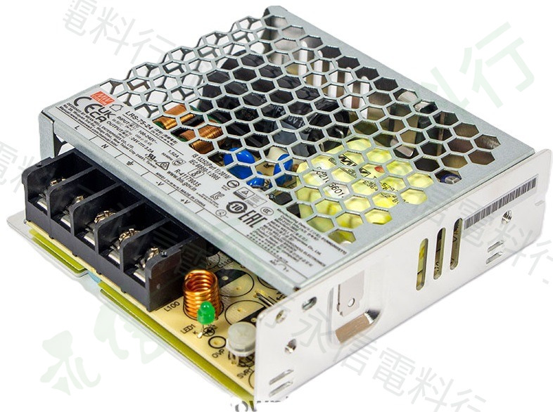
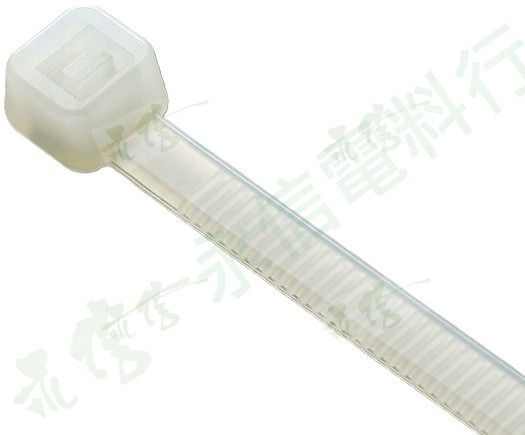
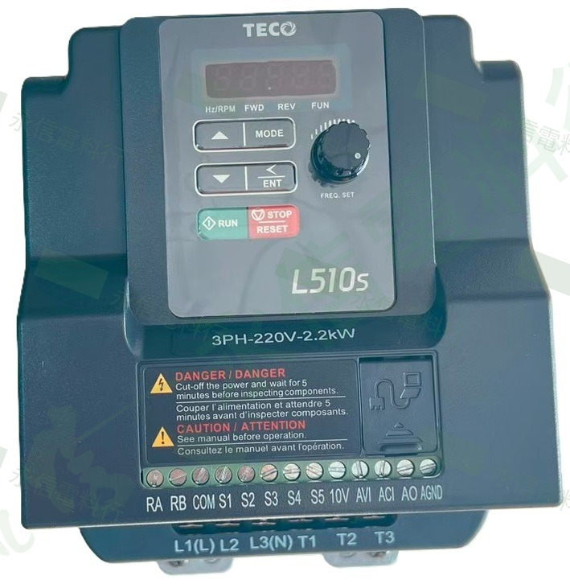

PLC 與人機介面
可程式控制器、人機介面及相關擴充模組
PRODUCT CATALOG
依工業控制與機台維修用途整理常用商品分類；請提供品牌、完整型號、電壓與數量以利規格確認。
PRODUCT SEARCH
輸入品牌、完整型號、系列、電壓、電流或商品類型，即時查找目前網站已建立的商品頁。
目前收錄 172 個商品頁。輸入品牌、型號、系列或規格關鍵字開始搜尋。
可嘗試縮短型號、改用品牌或規格關鍵字；若網站尚未建立該商品，也可以提供銘牌或舊品照片協助核對。
前往聯絡詢價INDUSTRIAL COMPONENTS
目前已建立「自動控制元件」、「配電與保護元件」、「電源與變壓器」與「馬達驅動與變頻器」等商品導覽，可依品牌、系列與型號進入商品頁與詢價流程。

電磁開關、接觸器、繼電器、定時器、計數器、按鈕與選擇開關
進入商品分類 →可程式控制器、人機介面及相關擴充模組
近接、光電、光纖、磁簧及其他工業感測器

小型斷路器、保險絲、漏電保護與相關保護元件
進入商品分類 →
交換式電源供應器、控制變壓器與相關配件
進入商品分類 →溫度控制器、熱電偶、電表與面板量測元件

端子台、線槽、電纜固定頭、束帶與配線器材
進入商品分類 →搖頭開關、微動開關、限動開關與操作介面

變頻器、馬達調速、驅動控制與相關配件
進入商品分類 →